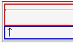
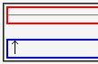

hr要素に display:block; と任意の下マージンを指定したとき、そのhr要素を最後部に内包する親要素の下マージンがhr要素に指定した下マージンと同じ値になる。
<div style="margin:0; border:2px solid red;"> <hr style="display:block; margin-bottom:1em;"> </div> <div style="margin:0; border:2px solid blue;">↑</div>
hr要素に1emの下マージンを設定しています。また、div要素のマージンは0にしています。
N7.02での表示（標準モード）
WinIE6.0での表示（標準モード）
バグを回避する方法がいくつかあります。
display:block; 指定をやめる（ただし、Gecko系UAで別のバグ（Mozバグ042、Mozバグ053）が発生することがある）。<div style="margin:0; border:2px solid red; width:100%;"> <hr style="display:block; margin-bottom:1em;"> </div> <div style="margin:0; border:2px solid blue;">↑</div>
<div style="margin:0; border:2px solid red;"> <hr style="display:block; margin-bottom:1em;"> ○</div> <div style="margin:0; border:2px solid blue;">↑</div>
<div style="margin:0; border:2px solid red;"> <hr style="display:block; margin-bottom:0;"> </div> <div style="margin:0; border:2px solid blue;">↑</div>
WinIE5.5、WinIE6.0標準モード、WinIE6.0互換モードで不具合の発生が確認されました。